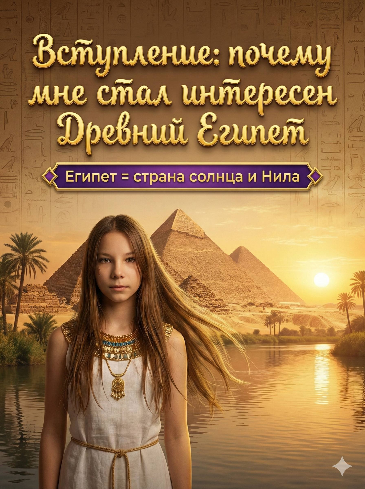
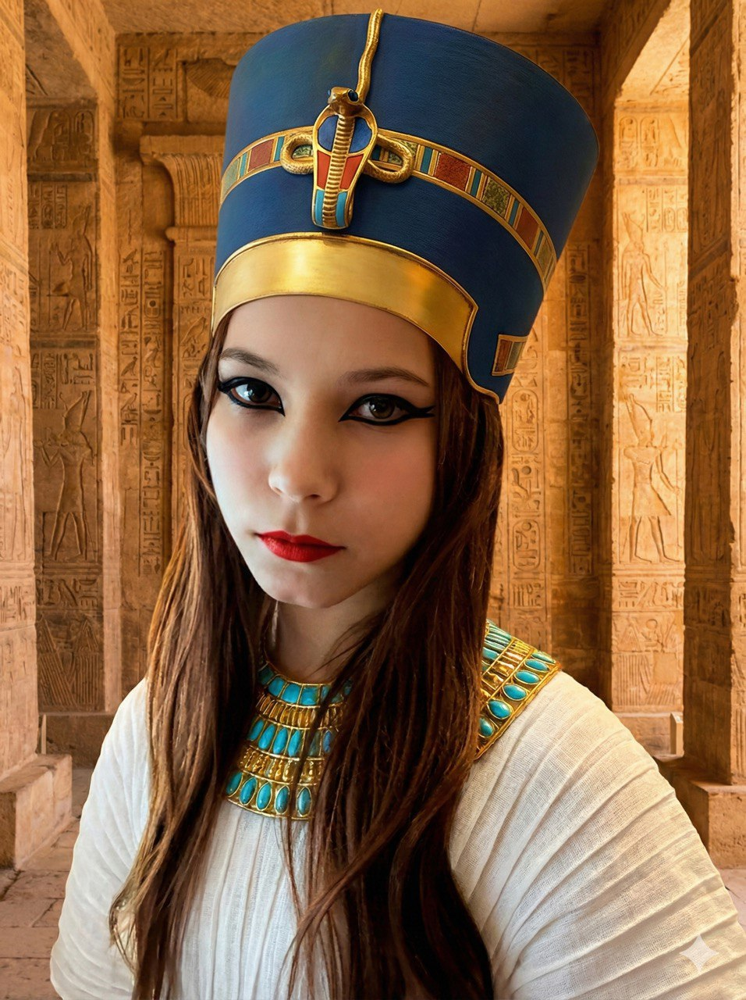
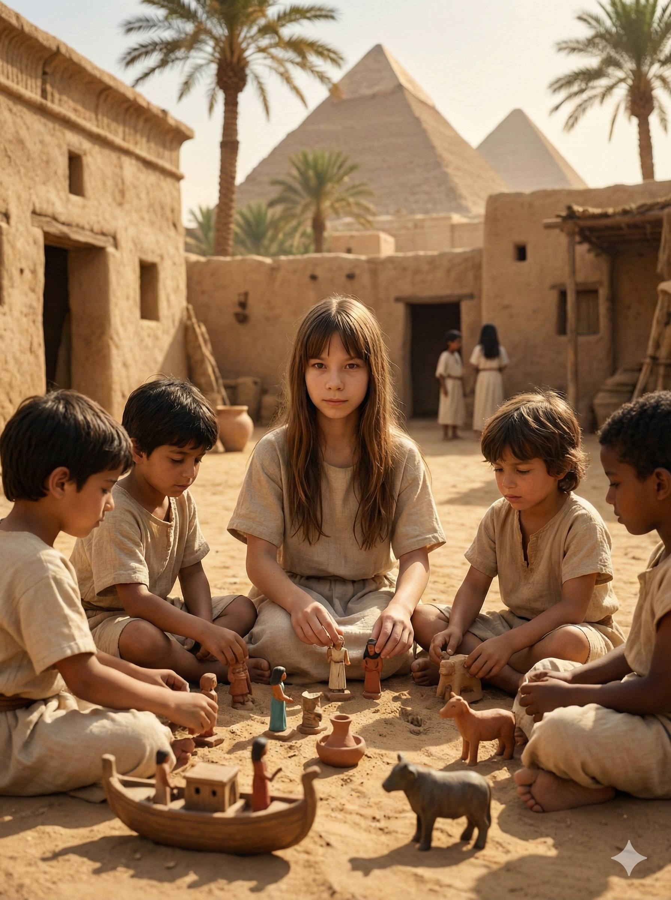
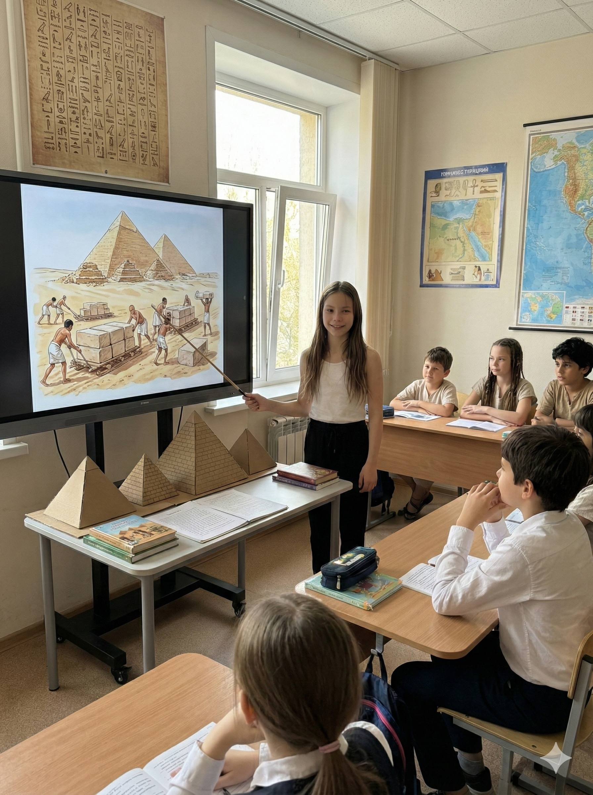

Вступление: почему мне захотелось узнать о Пушкине
Когда я впервые услышала «У лукоморья дуб зелёный», у меня в голове сразу появились русалки, кот учёный и цепь из золота. Я подумала: «Кто придумал такие волшебные картинки?» И узнала, что это написал Александр Сергеевич Пушкин. Мне стало очень интересно, каким он был и почему его называют «солнцем русской поэзии».
Мне нравится, что стихи Пушкина звучат как песня. Даже если я читаю их вслух в комнате, кажется, будто на дворе шуршат листья или гремит море. В этом докладе я расскажу самые яркие факты, которые меня удивили.

Кто такой Пушкин и чем он меня поразил
Пушкин родился в 1799 году в Москве. Он рос в семье, где любили книги и рассказы, а ещё его вдохновляли сказки няни Арины Родионовны. Мне понравилось, что Пушкин с детства любил читать и придумывать истории — это значит, что мечтать полезно!
Он учился в Царскосельском лицее — это была особенная школа, где ребята много писали, читали и учились думать. Я представляю, как он сидит за партой и записывает рифмы в тетрадку.
Пушкин писал не только стихи, но и сказки, поэмы, повести. Его произведения читают и взрослые, и дети. Мне кажется, это потому, что в них много жизни: дружба, мечты, смелость и любовь к свободе.

Мои любимые произведения (и почему они цепляют)
«Сказка о рыбаке и рыбке»
Меня удивило, как обычное желание становится всё больше и больше, пока не исчезает всё. Эта история учит быть благодарной.
«Сказка о царе Салтане»
Там есть волшебство, море и остров! Я люблю, когда добро и смелость побеждают.
«Руслан и Людмила»
Мне нравится начало про дуб зелёный — это как волшебные ворота в сказку.
Мини-викторина: проверь себя
Я придумала маленькую интерактивную игру. Нажми на вопрос, чтобы увидеть ответ.
Где учился Пушкин?
В Царскосельском лицее — это была очень престижная школа для талантливых ребят.
Кто рассказывал Пушкину сказки в детстве?
Его няня Арина Родионовна. Она знала много народных сказок.
Как называют Пушкина в литературе?
«Солнце русской поэзии» — потому что он осветил русскую литературу своими стихами.
Крошечная лента времени
Самые удивительные факты, которые я запомнила
- Пушкин написал больше 800 стихотворений — это целая гора тетрадок!
- Он любил путешествовать и вдохновлялся русской природой.
- Его сказки написаны стихами — поэтому они звучат как музыка.
- У Пушкина были верные друзья-лицеисты, и он берег эту дружбу всю жизнь.
- Многие строки из его стихов стали крылатыми выражениями.
- Он очень уважал русский язык и старался писать просто и красиво.
Мой любимый отрывок
Я выбрала несколько строк, которые звучат очень нежно. Когда читаешь их, хочется улыбнуться.
Передо мной явилась ты,
Как мимолётное виденье,
Как гений чистой красоты.»
Мне нравится, что эти слова можно читать медленно, как будто ловишь светлячков вечером.

Мой вывод: чему учит Пушкин
Когда я читаю Пушкина, я понимаю, что слова могут делать чудеса: поднимать настроение, учить добру и показывать красоту мира. Его истории напоминают мне, что важно быть честным, смелым и помнить про друзей.
Теперь я хочу перечитать больше его сказок и попробовать писать свои маленькие стихи. Может быть, однажды я тоже смогу придумать такой волшебный лес, как у Пушкина!
